# clear your environment
rm(list = ls())
# set the working directory
setwd('/Users/amreed18/Documents/ReproRehab/TA Materials/RR-TA-Materials-2026-2027')
# read in your data
data <- read.csv('rehab_study.csv',
header = TRUE)Pod1Lesson6
Today: Let’s create some data visualizations.
Learning Goals
By the end of this session, learners will be able to
- Text here
- text here
- Text here
Brief explanation here.
Setting Up Your Workspace
Install (if necessary) and load ggplot2.
# uncomment the following line of code if you need to install ggplot2.
# install.packages("ggplot2)
library(ggplot2)Understanding the language of ggplot.
ggplot is a lot like an onion… it has layers. When building graphs using ggplot, you’ll specify different aspects of the figure in each layer.
First Layer: What You Want to Plot
the dataframe
the variable you want on the x axis
the variable you want on the y axis
how you want things color coded by some condition/categorical variable in your dataset
Second Layer: What Type of Plot You Want
This layer is typically called the “geom” layer because each function you use to specify the plot type will start with geom. Some common ones you’ll probably be using are:
geom_point(): scatter plot
geom_bar() / geom_col(): bar graph (geom_col has a slightly different meaning but functionally, you can think of them as the same for now)
geom_histogram(): histogram
geom_boxplot(): boxplot
geom_violin(): violin plot
Within each of these functions, you can also edit things. For example, within geom_point(), you can change the shape, size, and opacity of each point on the graph. This will become more clear as we go through examples.
Third (and beyond) Layer(s): Dressing Up Your Plot
In this layer is where you can add things like axes labels, titles, change the labels for variables/values on either axes, colors… whatever you’ve dreamed of, you can probably do here. Some basic functions to start are:
labs(): Where you can specify the title, x axis title, and y axis title.
scale_y_discrete(): Where you can clean up your y axis labels. For example, instead of showing the long/confusing variable name, you can change it to be clearer and shorter.
Let’s go through a couple examples.
Histograms
ggplot(data,
aes(x = baseline_score)) +
geom_histogram()`stat_bin()` using `bins = 30`. Pick better value `binwidth`.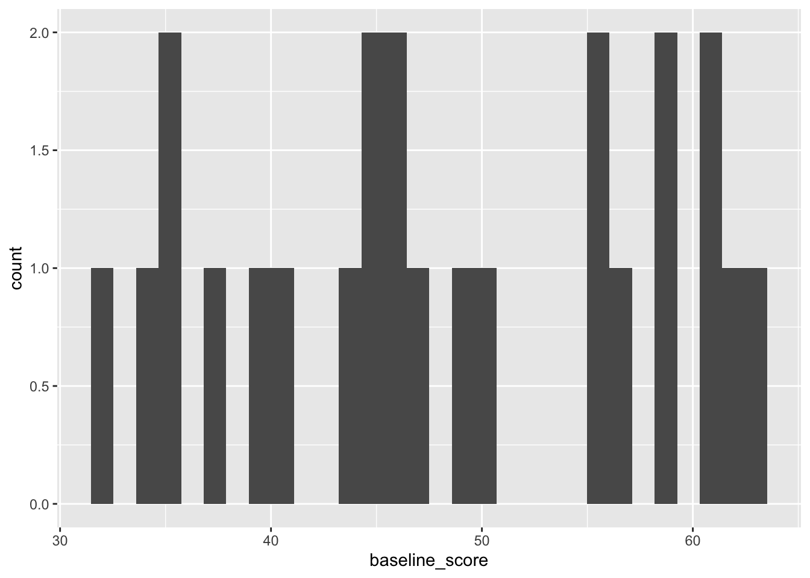
We got a warning about our bin width. We can edit this easily within the geom_histogram() layer.
ggplot(data,
aes(x = baseline_score)) +
geom_histogram(binwidth = 5)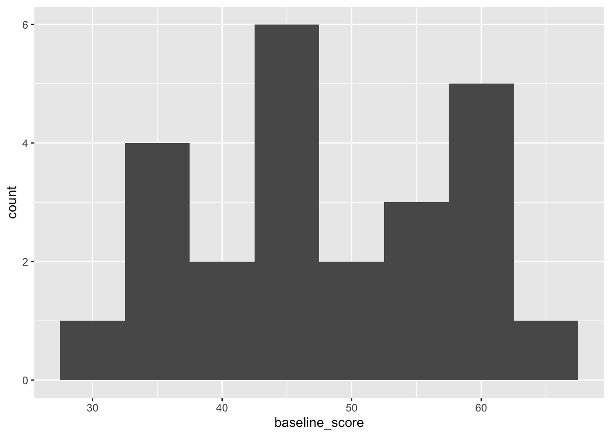
We can also change the x axis title to be more polished.
ggplot(data,
aes(x = baseline_score)) +
geom_histogram(binwidth = 5) +
labs(
x = "Baseline Score"
)Bar Graphs
Let’s look at a simple bar graph.
ggplot(data, aes(visits)) +
geom_bar()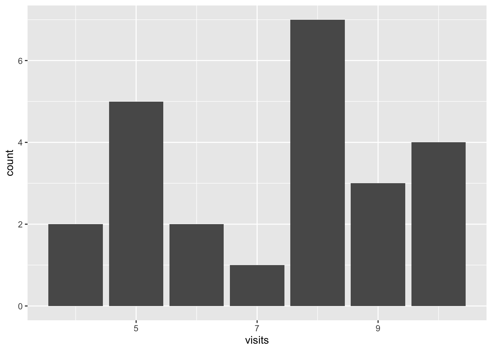
What if we wanted to see how number of visits varies by group (intervention vs control)? We could do this by setting a fill condition within aes().
# set group to a factor
data$group <- as.factor(data$group)
ggplot(data, aes(x = visits, fill = group)) +
geom_bar()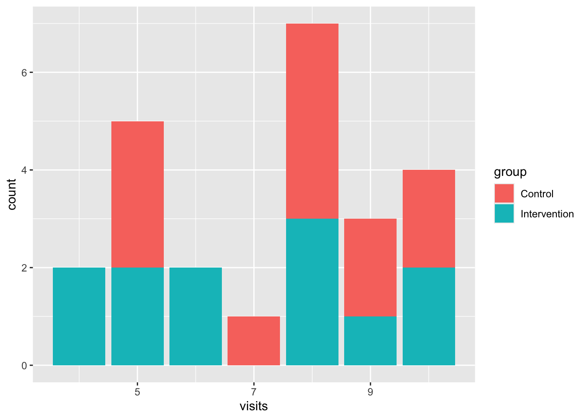
If you wanted to change this to be a side-by-side bar graph, we would alter the position. This is also an argument within each geom function. For a side-by-side bar graph, you set the position = “dodge”.
Side by Side Bar Graph
ggplot(data, aes(x = visits, fill = group)) +
geom_bar(position = "dodge")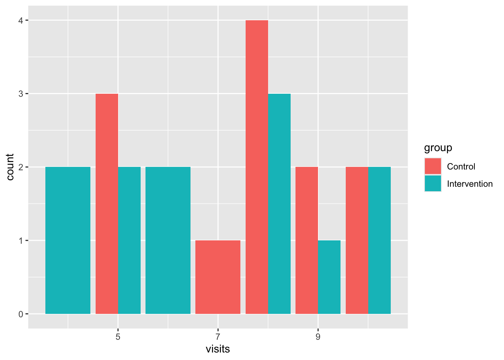
Your Turn: Create a bar graph based on completion status.
# YOUR TURN
Click here for the Answer
# put answer heregeom_bar vs geom_col
geom_barcounts the number of observations in each categorical variable automatically (it computes the height for you).
geom_col expects that you’ve already summarized your data and that you will provide the height of each bar specifically.
In short, use geom_bar when you have raw data and want to see the raw count. Use geom_col when you have summary data and want to plot the values.
For example,
# geom_bar()
ggplot(data, aes(visits, fill = group)) +
geom_bar(position = "dodge") +
labs(
title = "geom_Bar() Graph",
x = "Number of Visits",
y = "Count",
fill = "Group"
)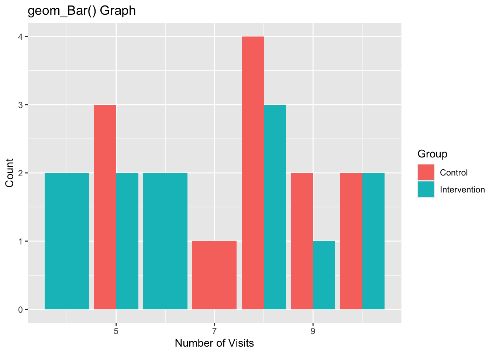
#geom_col()
avg_baselinescore <- aggregate(baseline_score ~ visits + group, data = data, FUN = mean) # for every unique combination of visits and group, calculate the mean of baseline_score and store this output to a new data frame called avg_baselinescore
ggplot(avg_baselinescore, aes(x = visits, y = baseline_score, fill = group)) +
geom_col(position = "dodge") +
labs(
title = "Average Baseline Score by Visits and\nGroup Status using geom_col()",
x = "Visits",
y = "Average Baseliine Score",
fill = "Group"
)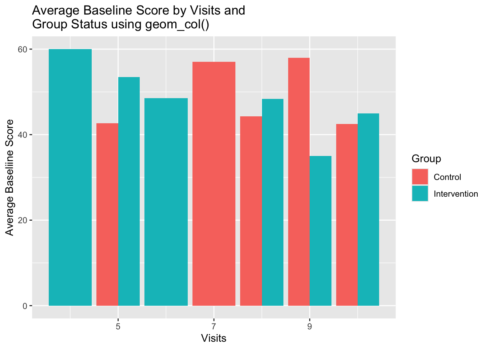
Scatter Plot
Let’s examine the relationship between age and baseline_score.
ggplot(data,
aes(x = baseline_score,
y = age)) +
geom_point()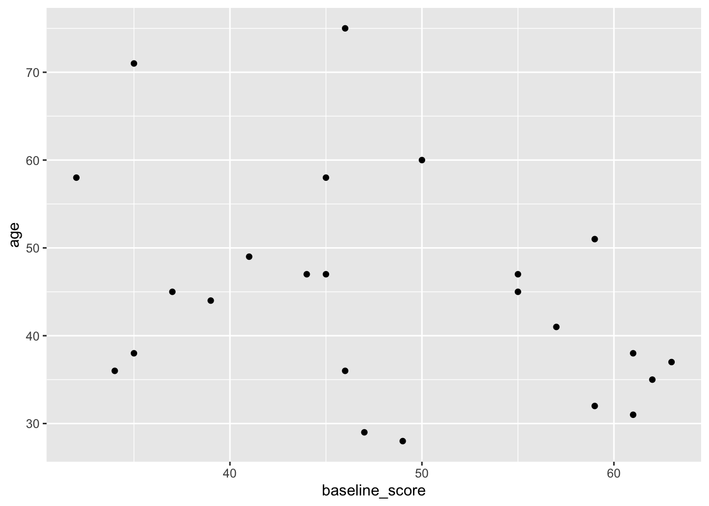
We can change the size of the dots based on another variable in the dataset to communicate even more information in one visual. For example, we could set the size = visits to see how this relationship varies based on age.
ggplot(data,
aes(x = baseline_score,
y = age,
size = visits)) +
geom_point()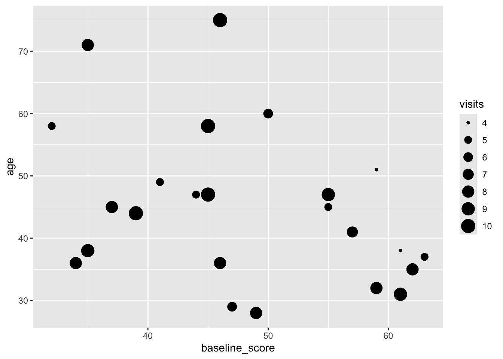
Or you can have the color of the dots change based on visit number if that’s more your vibe.
ggplot(data,
aes(x = baseline_score,
y = age,
color = visits)) +
geom_point()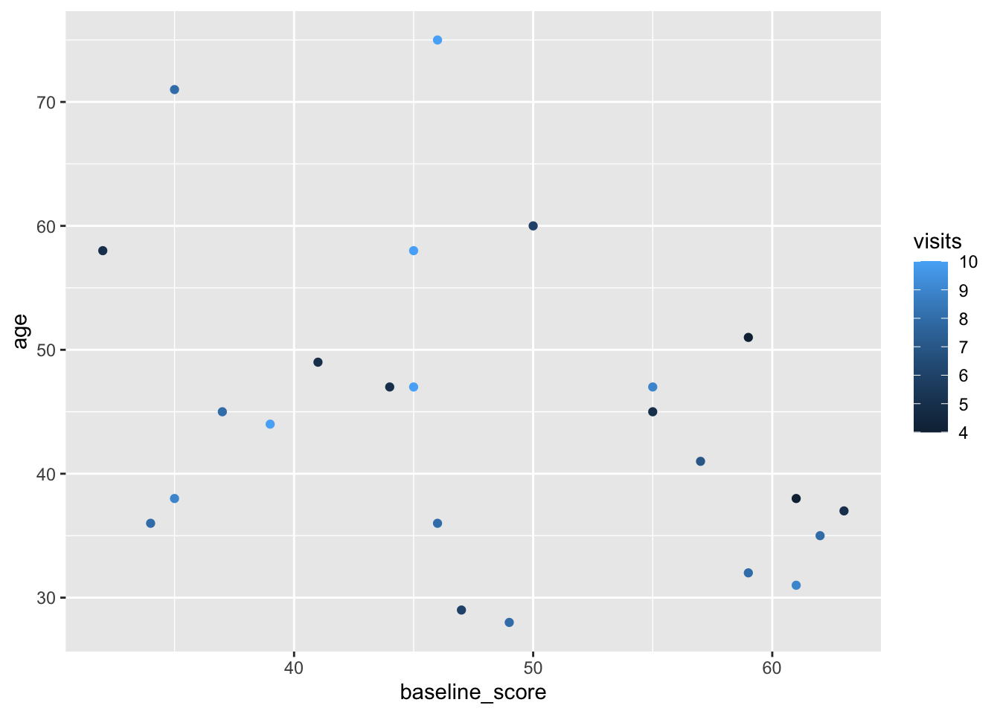
If we just generally want to change the shape and size of our points because they’re too big or too small, we can do that by adding shape and size arguments into the geom_point() function.
ggplot(data,
aes(x = baseline_score,
y = age)) +
geom_point(shape = 1, size = 4)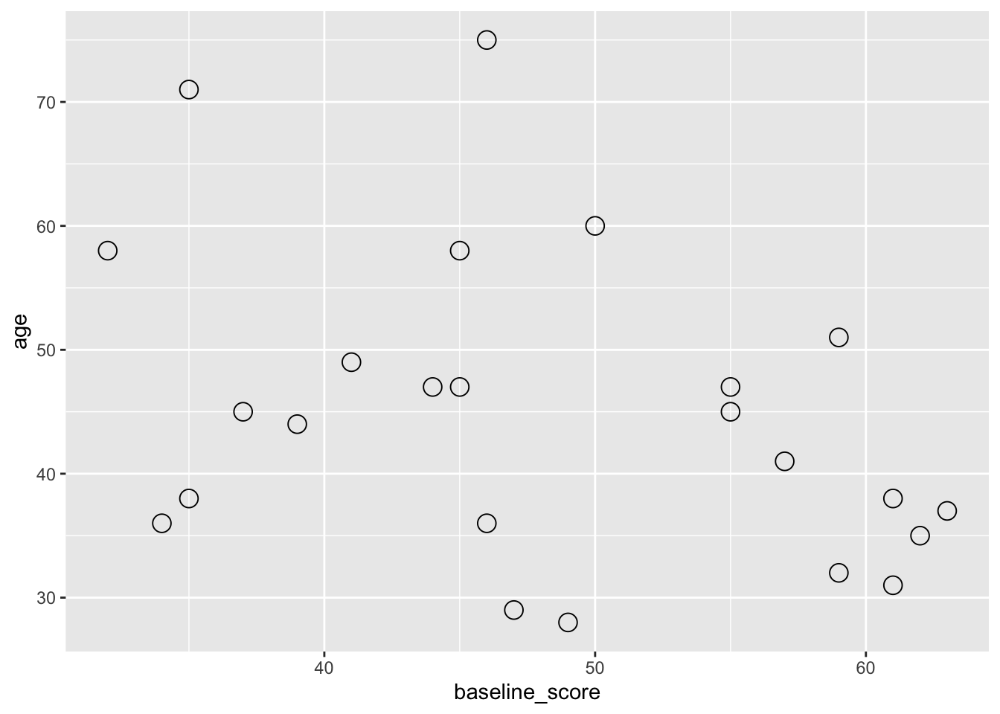
If you’re ever wondering what number equals what shape, there’s a key available here: https://www.r-bloggers.com/2023/11/enhance-scatterplots-with-ggplot-shapes-in-r/
You can also add a line of best fit to your scatter plot by adding a geom_smooth() layer.
ggplot(data,
aes(x = baseline_score,
y = age)) +
geom_point() +
geom_smooth(method = "lm")`geom_smooth()` using formula = 'y ~ x'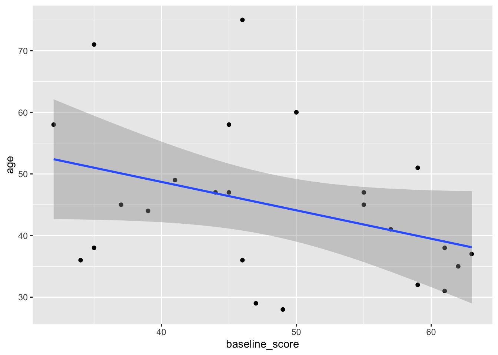
Your Turn: Scatter Plot Exercise
- Create a scatter plot examining the relationship between age and score_change.
- Change the points to be different colors based on group.
- Based on the key available provided at the link above, change the points to a hollow triangle point downward.
- Add a line of best fit to your plot.
# YOUR CODE HERE
Click here for the Answer
# code hereBoxplots
Some data visualizations, like boxplots, require your data to be in long format instead of wide.
For the boxplot exercise, we’re going to read in rehab_study_long, a dataset we created last week in Lesson 5 when we learned to pivot from wide to long, and vice versa.
setwd('/Users/amreed18/Documents/ReproRehab/TA Materials/RR-TA-Materials-2026-2027')
data_long <- read.csv('rehab_study_long.csv',
header = TRUE)
head(data_long) X participant_id age group visits completed timepoint score
1 1 P001 51 Intervention 4 Yes baseline_score 59
2 2 P001 51 Intervention 4 Yes followup_score 69
3 3 P002 60 Intervention 6 Yes baseline_score 50
4 4 P002 60 Intervention 6 Yes followup_score 58
5 5 P003 38 Intervention 9 Yes baseline_score 35
6 6 P003 38 Intervention 9 Yes followup_score 46We can create a simple boxplot looking at how baseline scores and follow up scores differ.
ggplot(data_long,
aes(x = factor(timepoint), y = score)) +
geom_boxplot()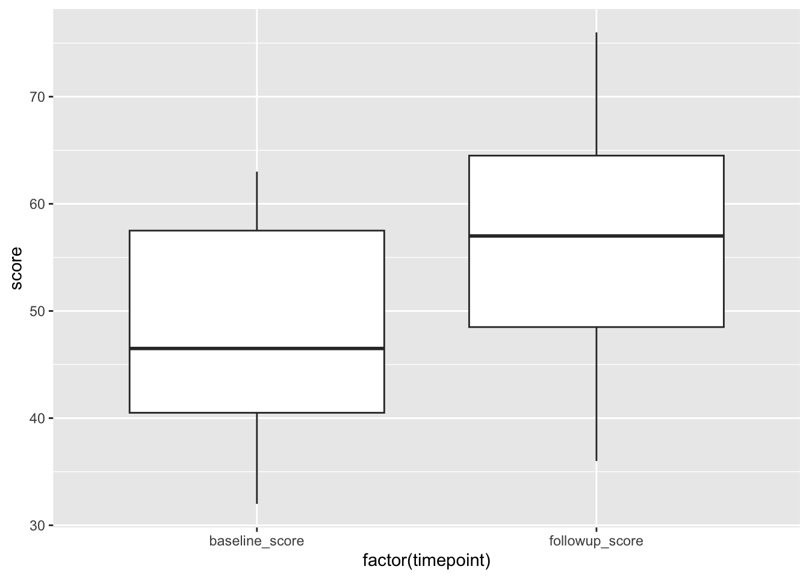
Challenge: If you wanted to add each individual point to your box plot, what would you do?
# your code here
Click here for the Answer
ggplot(data_long,
aes(x = factor(timepoint), y = score)) +
geom_boxplot() +
geom_point()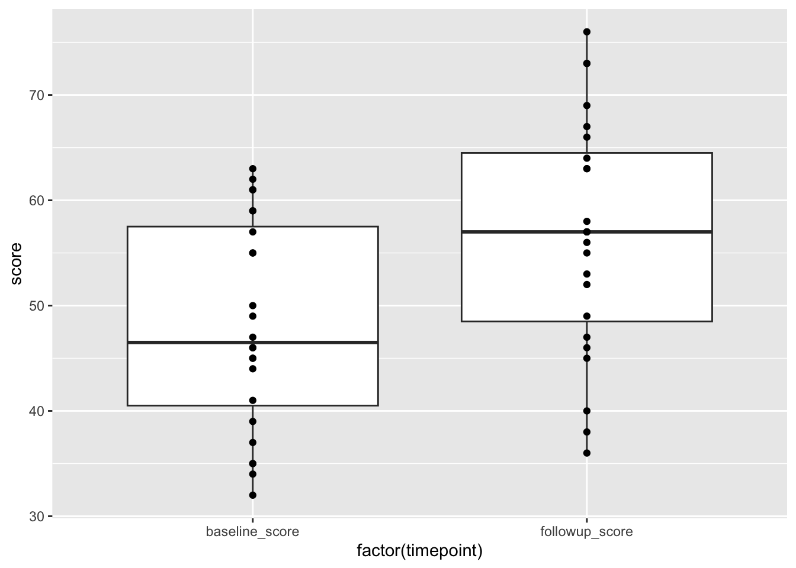
Violin Plots: Boxplot’s Ivy League Sibling
Violin plots show the distribution of a numeric variable for different groups - like boxplots, but they also display the density (the shape of the data). The wider sections of the violin show where more data points fall. This makes violin plots great for comparing how values are spread out across categories - not just their medians and quartiles.
ggplot(data_long,
aes(x = factor(timepoint), y = score)) +
geom_violin(trim = FALSE)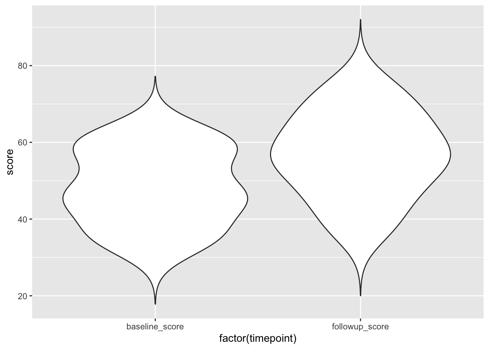
Themes
You can also change the theme of your plots to make them look more polished. There are preset themes OR you can create your own.
Preset Themes
ggplot(data_long,
aes(x = factor(timepoint), y = score)) +
geom_violin(trim = FALSE) +
theme_bw()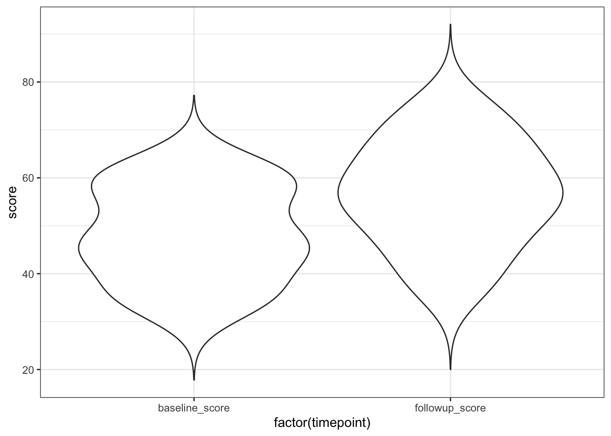
ggplot(data_long,
aes(x = factor(timepoint), y = score)) +
geom_violin(trim = FALSE) +
theme_classic()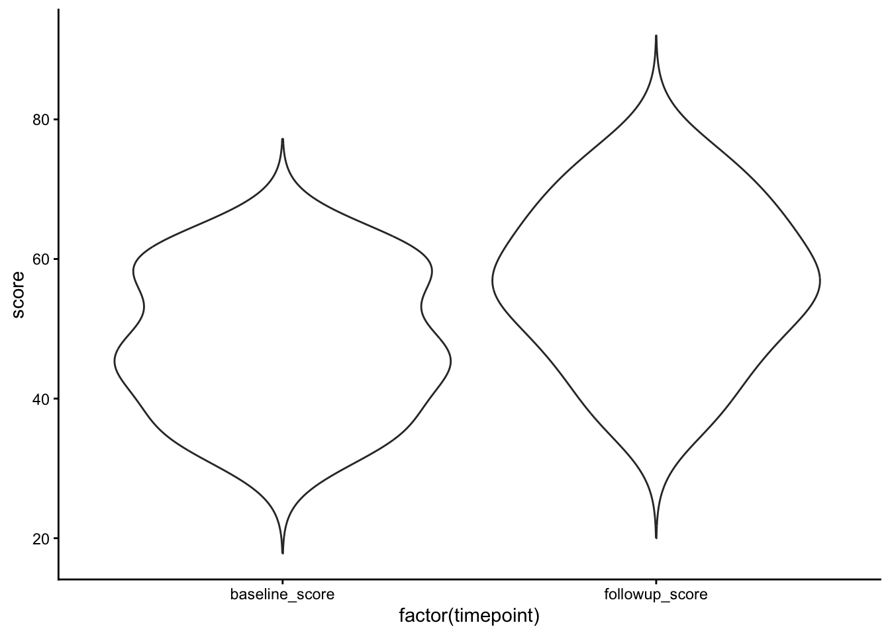
ggplot(data_long,
aes(x = factor(timepoint), y = score)) +
geom_violin(trim = FALSE) +
theme_minimal()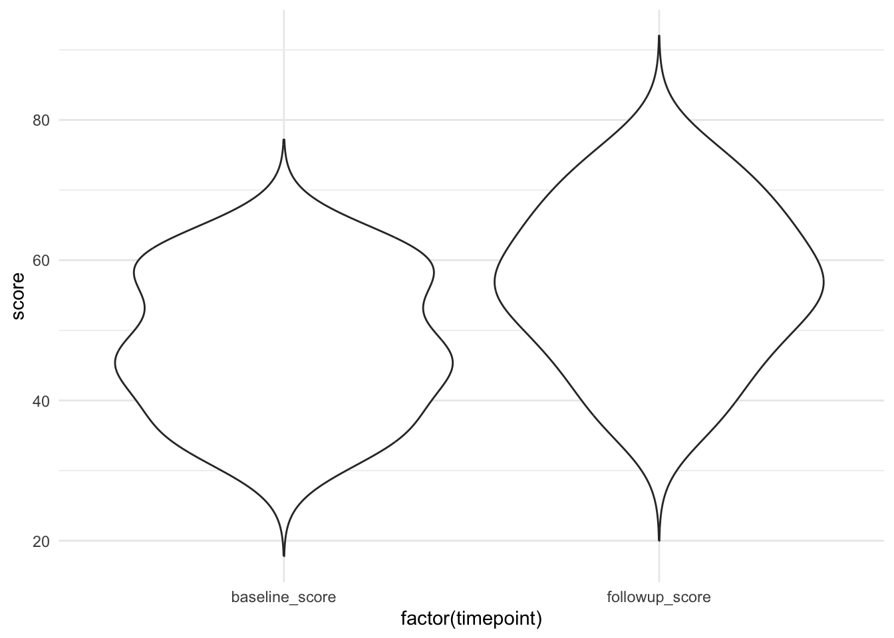
Build Your Own Theme Using theme()
Text here/brief exp here
ggplot(data,
aes(x = baseline_score,
y = age,
color = visits)) +
geom_point() +
theme_minimal(base_size = 13) + # start with a clean base theme
theme(
plot.title = element_text(face = "bold", size = 16, hjust = 0.5),
axis.title = element_text(face = "bold"),
axis.text = element_text(color = "gray25"),
panel.grid.major.x = element_blank(), # remove vertical grid lines
panel.grid.minor = element_blank(),
legend.position = "bottom",
legend.title = element_text(face = "bold")
)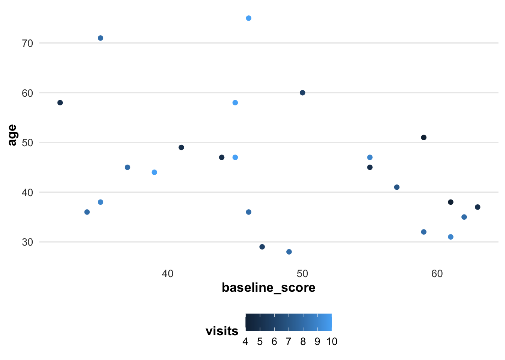
But what if you want to reuse your theme within an RMarkdown file? You can do that by creating a function.
theme_clean <- function() {
theme_minimal(base_size = 13) + # start with a clean base theme
theme(
plot.title = element_text(face = "bold", size = 16, hjust = 0.5),
axis.title = element_text(face = "bold"),
axis.text = element_text(color = "gray25"),
panel.grid.major.x = element_blank(), # remove vertical grid lines
panel.grid.minor = element_blank(),
legend.position = "bottom",
legend.title = element_text(face = "bold")
)
}In our environment, theme_clean() now exists. This means we can apply it to any plot now without having to rewrite all those lines of code.
ggplot(data, aes(x = visits, fill = group)) +
geom_bar(position = "dodge") +
theme_clean()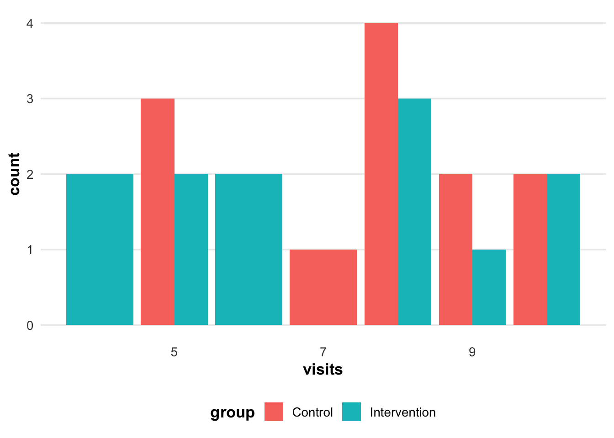
If you want to reuse a theme throughout an entire R project, _____.